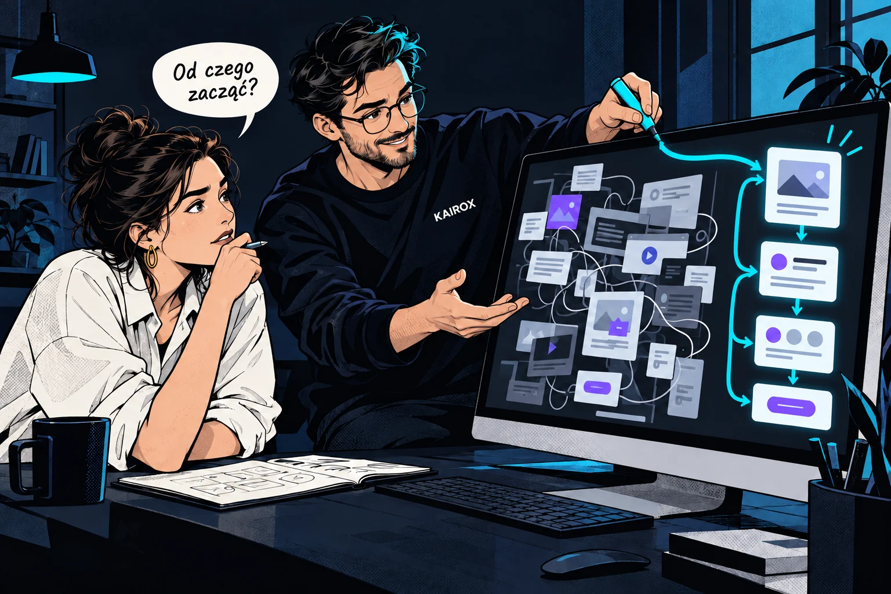
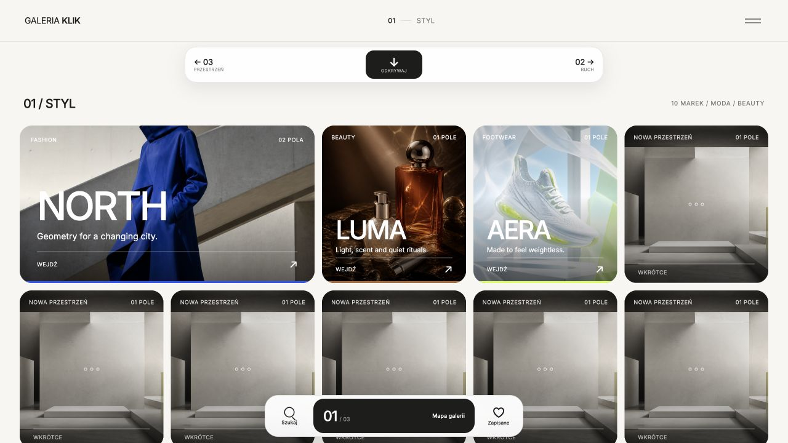
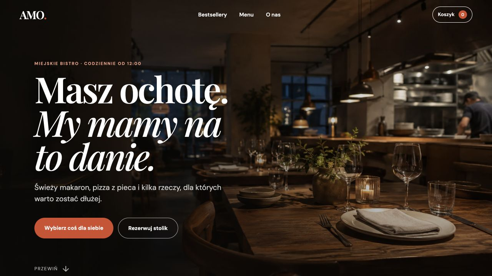

Audyt komunikacji
Pierwszy krok naszej współpracy. Sprawdzamy, czy Twoja strona jasno komunikuje wartość firmy i wskazujemy, co naprawdę warto zmienić.
Zobacz audytStrony internetowe i komunikacja
Sprawdzamy, co warto uprościć, a następnie porządkujemy treść, strukturę i drogę do kontaktu. Pomagamy też zaprojektować nową stronę od podstaw.

Pierwszy krok
Podaj adres swojej strony. Przeniesiemy go do krótkiego formularza, w którym uzupełnisz tylko dane potrzebne do kontaktu.
Poznaj KAIROX
Sprawdź obecną stronę, poznaj sposób pracy albo porównaj zakresy współpracy.
Pierwszy krok naszej współpracy. Sprawdzamy, czy Twoja strona jasno komunikuje wartość firmy i wskazujemy, co naprawdę warto zmienić.
Zobacz audytPoznaj proces, dzięki któremu projektujemy strony oparte na strategii, komunikacji, UX i dopiero na końcu designie.
Poznaj metodęZobacz dostępne zakresy — od audytu i strony kampanii po pełną stronę komunikacyjną i stałe partnerstwo.
Zobacz modeleDługoterminowe wsparcie w rozwoju strony, komunikacji, landing page'y, optymalizacji i kolejnych wdrożeniach.
Zobacz współpracęPraktyczne artykuły o komunikacji, UX i stronach internetowych, które pomagają lepiej zrozumieć nasz sposób pracy.
Czytaj artykułyMetoda Agent 0
Dla kogo jest oferta? Jaką daje korzyść? Dlaczego warto zaufać? Od tych odpowiedzi zaczynamy projekt.
Pierwszy krok współpracy
Czasami problemem jest komunikacja. Czasami struktura. Czasami brak jasnej propozycji wartości. Dlatego zanim zaprojektujemy cokolwiek, zaczynamy od audytu komunikacji.
Wybrane realizacje
Dwa projekty koncepcyjne pokazują, jak upraszczamy odkrywanie oferty. Wszystkie cztery projekty i działające wersje znajdziesz w realizacjach.
Zobacz wszystkie realizacje →
Otwórz projekt ↗Jak ułatwić wybór wśród wielu marek? W Galerii Klik mapa i tematyczne piętra prowadzą do sklepów. To przykład nawigacji dla rozbudowanego katalogu.

Otwórz projekt ↗Jak pomóc wybrać danie na telefonie? W AMO bestsellery i filtry prowadzą do krótkiego menu, zestawu i rezerwacji — od pomysłu na posiłek do kolejnego kroku.
Modele współpracy
Możemy zacząć od audytu, stworzyć landing page dla jednej usługi, zbudować pełną stronę komunikacyjną albo rozwijać markę w ramach stałego partnerstwa.
Porozmawiajmy
Łączymy treść, wygląd i działanie strony, żeby odbiorca mógł poznać firmę i łatwo się skontaktować.